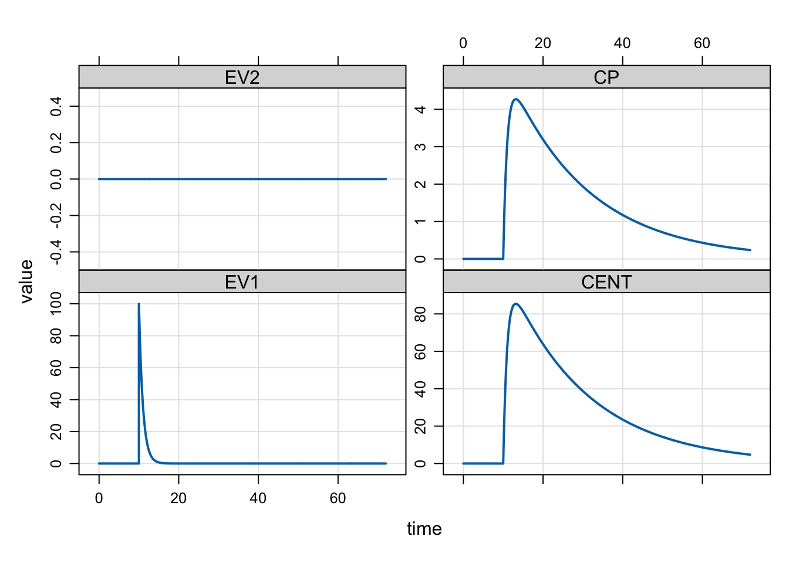
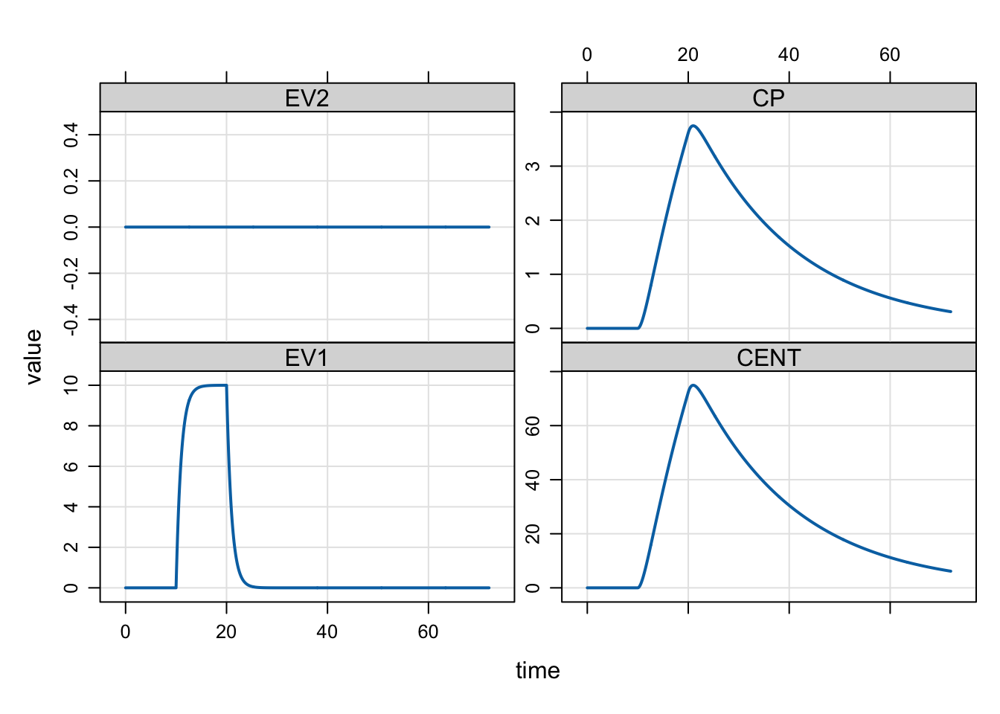
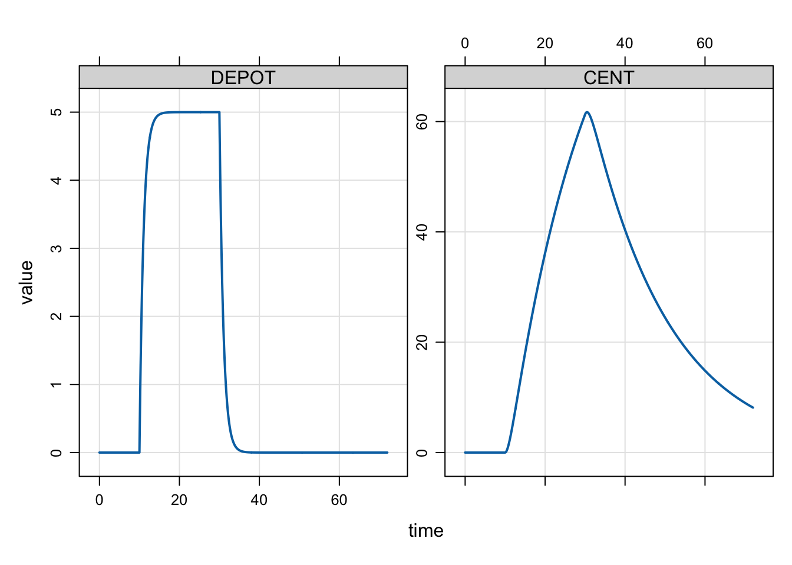
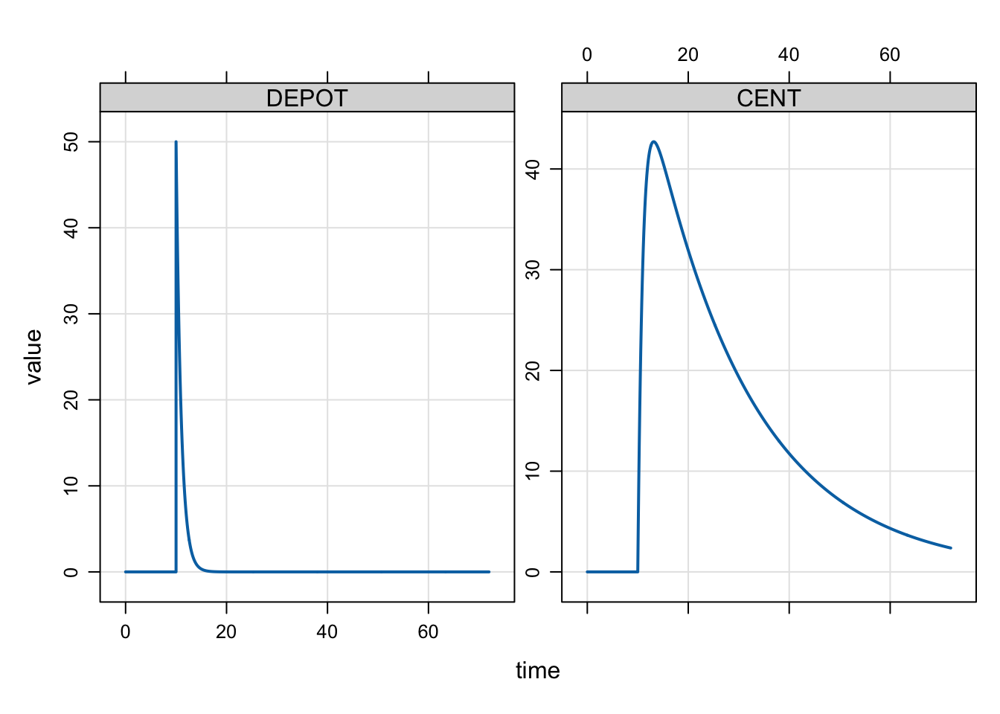
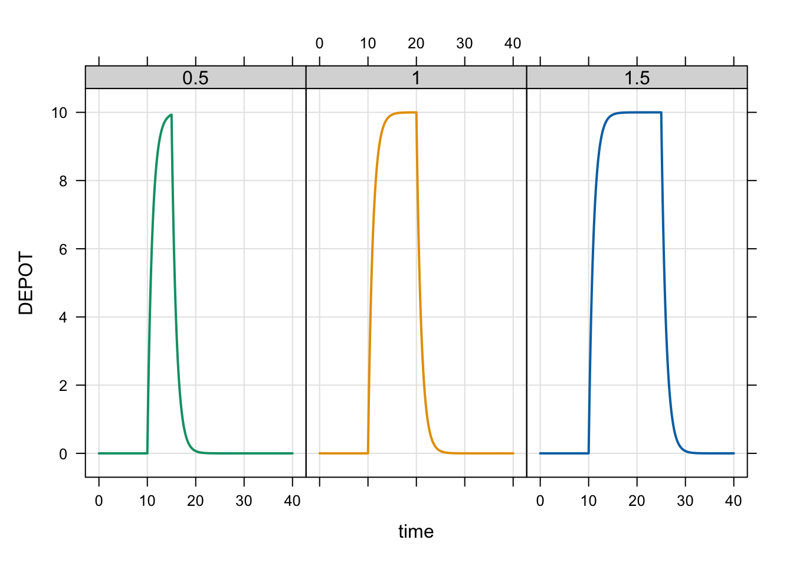
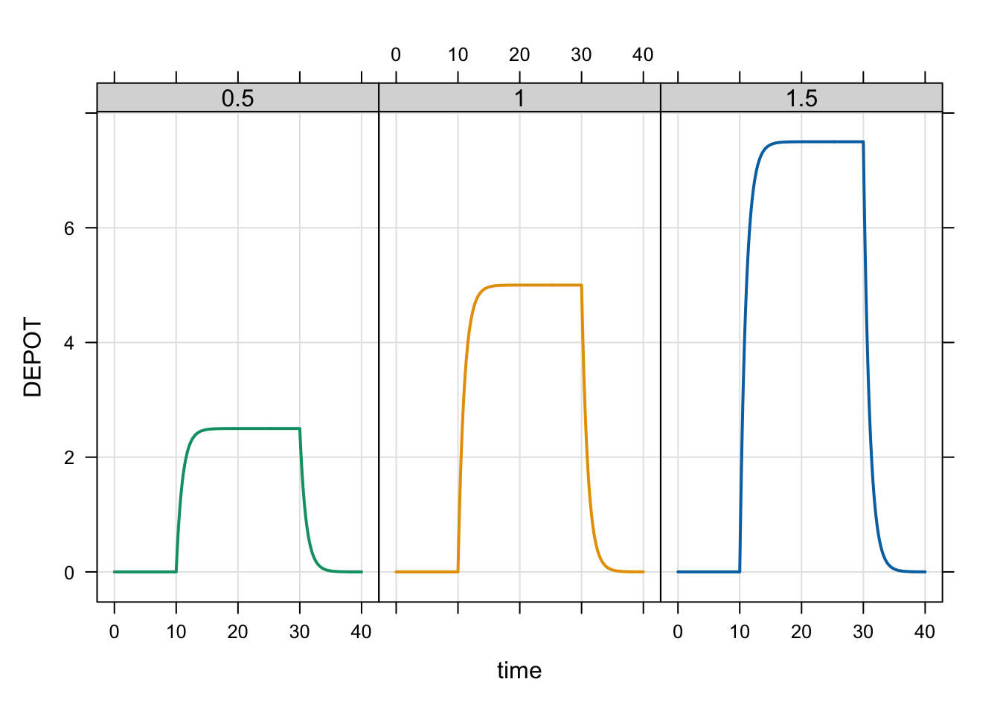
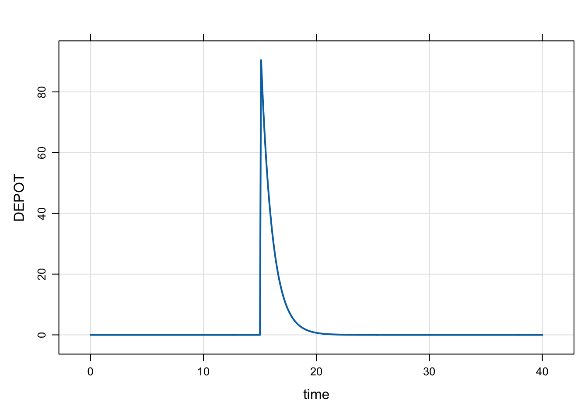
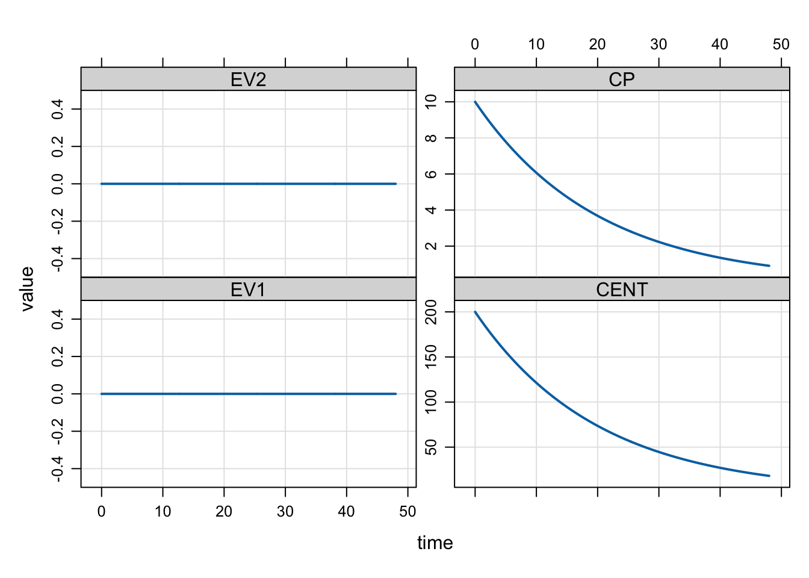
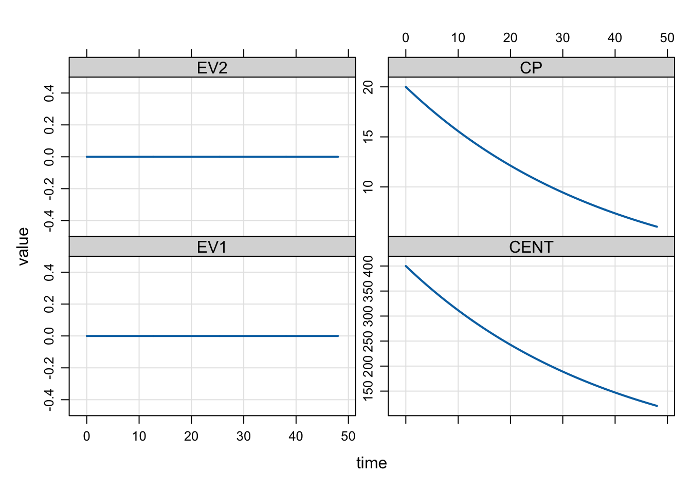

mod <- modlib("pk1cmt", end = 72, delta = 0.1)
dose <- ev(time = 10, evid = 1, amt = 100, cmt = 1)
mrgsim(mod, dose) %>% plot()
mrgsolve can implement both bolus and infusion doses. Ordinarily, this is accomplished through an input data set (Chapter 4 and Chapter 5). Doses can also be implemented from within the model itself (Section 11.4).
A bolus dose is implemented by adding the dose amount to the indicated compartment. To implement a bolus dose, use event ID 1.
mod <- modlib("pk1cmt", end = 72, delta = 0.1)
dose <- ev(time = 10, evid = 1, amt = 100, cmt = 1)
mrgsim(mod, dose) %>% plot()
In this example, to give the dose at 10 hours, the system is advanced to the time of the dose record and the 100 unit dose amount is added to the first compartment. Before the problem continues, the ODE solver is reset, creating a discontinuity in the simulation. Specifically, the solver restarts with a new initial value (the amount already in EV at the time of the dose plus the added dose amount).
In the previous example, we specified each argument in the ev() constructor. All of the arguments were specified at their default values (e.g., time = 0, evid = 1) for clarity. The same event object can be created with
dose <- ev(amt = 100)See Chapter 5 for more information.
To implement a single, intermittent infusion dose, specify the rate in the data set or event object. We can convert the previous bolus dose as an infusion like this
dose <- ev(time = 10, evid = 1, amt = 100, rate = 10, cmt = 1)
mrgsim(mod, dose) %>% plot()
Because there was a 100 mg dose infused at a rate of 10 mg/hr, the duration of the infusion is 10 hours. In this case, mrgsolve integrates up to the time of the infusion dose and starts a zero-order infusion at the specified rate. At the time the dose is started, mrgsolve schedules another event to turn the infusion off. Discontinuities (ODE solver resets) are introduced in the simulation at the times when infusions start or end.
While infusions are sometimes thought of as extra-vascular administration (like an IV infusion), these doses can be administered to any compartment in the model.
This is an intermittent dose because it has a definite start and end time.
In certain cases, we’d like to model the infusion rate or the infusion duration. In that case, we cannot specify rate in the data set prior to the simulation; it must be set in the model itself.
To do this, enter the infusion rate or duration in the $PK block. We’ll expand the example to model the duration of an infusion over 20 hours. We write the model with D_DEPOT = 20; to indicate that any infusion in to the DEPOT compartment should have a duration of 20 hours.
code <- '
$PARAM CL = 1, V = 20, KA = 1
$PKMODEL cmt = "DEPOT,CENT", depot = TRUE
$PK
D_DEPOT = 20;
'
mod <- mcode_cache("dose-events-1", code, end = 72, delta = 0.1)To model the infusion rate, use R_DEPOT = 5; to get a duration of 20 hours for 100 mg dose.
R_DEPOT and D_DEPOT are the original variables to set for modeling infusion rate and duration, respectively. NONMEM uses Rn and Dn instead, where n is the compartment number (i.e. R1 and D1). To use this syntax instead, you need to invoke the nm-vars plugin (Section 11.2).
When modeling the infusion duration or rate, you must set RATE to -1 (modeled infusion rate) or -2 (modeled infusion duration) in your input data set or event object. In our case we modify the rate item in the event object to -2 because we are modeling the infusion duration.
dose_d <- mutate(dose, rate = -2)
mrgsim(mod, dose_d) %>% plot()
mrgsolve will warn you if you have not provided a RATE data item that is consistent with your model. So, we would get warned if we forgot to set RATE = -2.
out <- mrgsim(mod, dose). Warning in (function (x, data, idata = no_idata_set(), carry_out = carry.out, :
. [mrgsolve] RATE is not -2 on a dosing record with modeled infusion duration;
. either set the modeled duration to zero or use the `@!check_modeled_infusions`
. block option for $MAIN/$PK to slience this warning.Note that it is not unreasonable to request either / both bolus or infusion doses into a compartment with a modeled infusion duration or rate. To enable this behavior, you can either write logic into $PK that detects the dose type and set either R_CMT or D_CMT to a positive number for an infusion or 0 for bolus; this will silence the warning from mrgsolve. A more global option is to set the @!check_modeled_infusions option on the $PK (or $MAIN) block.
When you specify a bioavailability factor for bolus doses, mrgsolve multiplies the dose amount by that factor just before administering the dose.
To illustrate, we code a model with F = 0.5 through a parameter named BA.
code <- '
$PARAM CL = 1, V = 20, KA = 1, BA = 0.5
$PKMODEL cmt = "DEPOT,CENT", depot = TRUE
$PK
F_DEPOT = BA;
'
mod <- mcode_cache("dose-events-2", code, end = 72, delta = 0.1)In the bolus dose case, this will be as if we had given 50 mg rather than 100 mg.
dose <- ev(amt = 100, time = 10)
mrgsim(mod, dose) %>% plot()
Note that F_CMT can be greater than 1. In this case, you can increase the effective dose administered.
To get the NONMEM-like syntax F1 or F3 for bioavailability, invoke the nm-vars plugin (Section 11.2).
When you specify a bioavailability factor for an infusion, mrgsolve again multiplies the dose amount by the bioavailability factor. When you have given and infusion rate or modeled the rate, changing the bioavailability factor from 1 will change the duration of the infusion: setting F_CMT less than 1 will reduce the infusion duration and setting F_CMT greater than 1 will increase the duration of the infusion.
We use the same model and do sensitivity analysis on BA to look at how infusion duration change when rate is fixed.
code <- '
$PARAM CL = 1, V = 20, KA = 1, BA = 0.5
$PKMODEL cmt = "DEPOT,CENT", depot = TRUE
$PK
F_DEPOT = BA;
'
mod <- mcode_cache("dose-events-2", code, end = 72, delta = 0.1)The key here is that we fix RATE to 10 in the data / event object.
dose <- ev(amt = 100, time = 10, rate = 10)
idata <- expand.idata(BA = c(1.5, 1, 0.5))
out <- mrgsim_ei(mod, dose, idata, end = 40, recover = "BA")
plot(out, DEPOT ~ time |factor(BA), scales = list(y = list(relation = "same")))
When you model the infusion duration, the infusion will run for that duration regardless of the bioavailability.
code <- '
$PARAM CL = 1, V = 20, KA = 1, BA = 0.5
$PKMODEL cmt = "DEPOT,CENT", depot = TRUE
$PK
D_DEPOT = 20;
F_DEPOT = BA;
'
mod <- mcode_cache("dose-events-3", code, end = 40, delta = 0.1)Be sure to use rate = -2 in the data set.
dose <- ev(amt = 100, time = 10, rate = -2)
out <- mrgsim_ei(mod, dose, idata, end = 40, recover = "BA")
plot(out, DEPOT ~ time | factor(BA), scales = list(y = list(relation = "same")))
With the duration fixed, reducing the bioavailability reduces the maximum concentration from the dose.
Adding a lag time to your model simply pushes the effective time of dose administration into the future. This example sets the lag time of 5 hours.
code <- '
$PARAM CL = 1, V = 20, KA = 1, LT = 5
$PKMODEL cmt = "DEPOT,CENT", depot = TRUE
$PK
ALAG_DEPOT = LT;
'
mod <- mcode_cache("dose-events-4", code, end = 40, delta = 0.1)To get the NONMEM-like syntax ALAG1 or ALAG3 for lag times, invoke the nm-vars plugin (Section 11.2).
dose <- ev(amt = 100, time = 10)
mrgsim(mod, dose) %>% plot("DEPOT")
Lag times work the same for bolus doses and intermittent infusions.
A steady-state infusion is a single, infinitely long infusion at a specified rate. For example, you start a zero-order infusion at a given rate and keep it running at that rate out to steady state. You can do that in mrgsolve by specifying the infusion rate with the SS = 1 flag, but zero in AMT.
mod <- modlib("pk1cmt", end = 48, delta = 0.1, start = 0.1). Loading model from cache.dose <- ev(amt = 0, rate = 10, ss = 1, cmt = 2)
mrgsim(mod, dose) %>% plot()
Notice that CP is 10 at time = 0. This is because we gave a 10 mg/h infusion and clearance was 1. Then the steady state concentration should be 10.
dose$rate / mod$CL. [1] 10The steady-state infusion dose record just gets to Css at the time of the record. If additional doses are desired, they need to be coded into the data set after the steady state infusion record.
Let’s reduce clearance to check.
mod <- param(mod, CL = 0.5)
mrgsim(mod, dose) %>% plot()
Now, we get the expected Css of 20 mg/L.